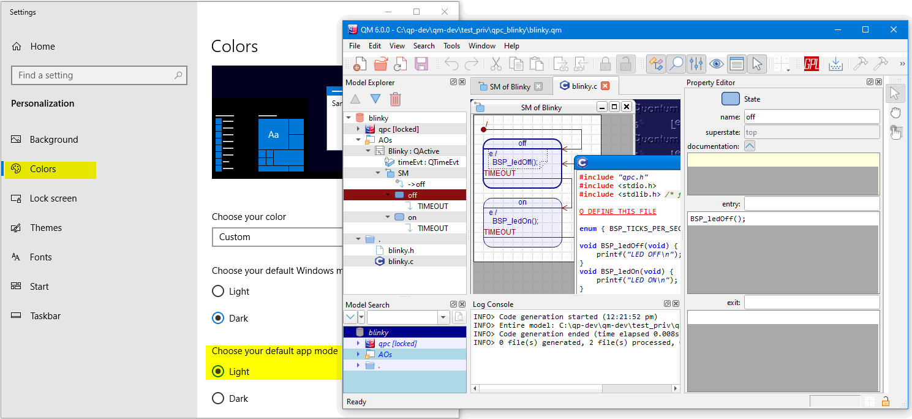
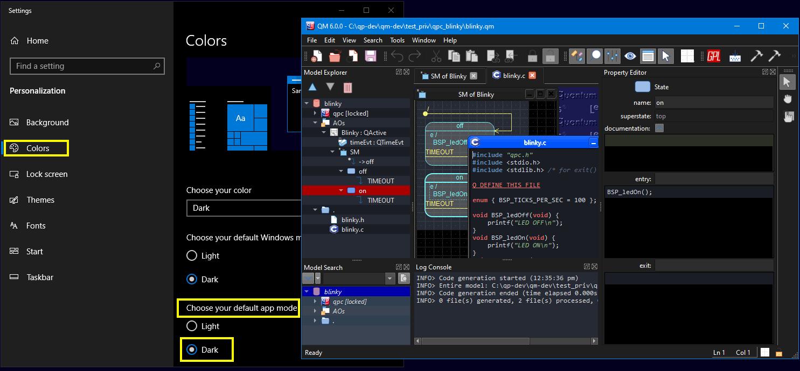

QM
6.1.1
Model-Based Design Tool
The QM GUI supports the light and dark color schemes and can automatically adjust to the system color scheme.
When the system is configured with the light color scheme for applications, QM automatically selects the light stylesheet (Resources/qm_light.qss).

When the system is configured with the dark color scheme for applications, QM automatically selects the dark stylesheet (Resources/qm_dark.qss).

If the automatic color scheme detection does not work satisfactorily for some reason, the auto-detection mechanism can be overridden. Specifically, when the stylesheet (Resources/qm.qss) is provided, it is appled regardless of the system color settings. In that case, QM will ignore the other stylesheets (Resources/qm_light.qss or Resources/qm_dark.qss)